Whether you shop for groceries or travel for fun, you will always find a road. If you use it well, you can get great shots too.
Below are a few ideas for shooting roads.
Composition
1. Triangle composition
A wide-angle lens creates a sense of space. It makes far things small and near space large. On a straight road, the result forms a triangle, which makes the photo feel steady. If the road has colored markings, the photo is richer.
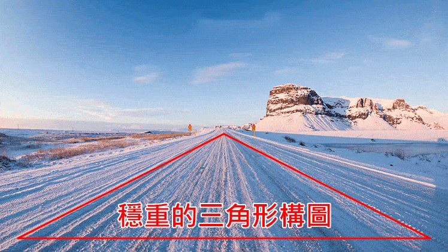
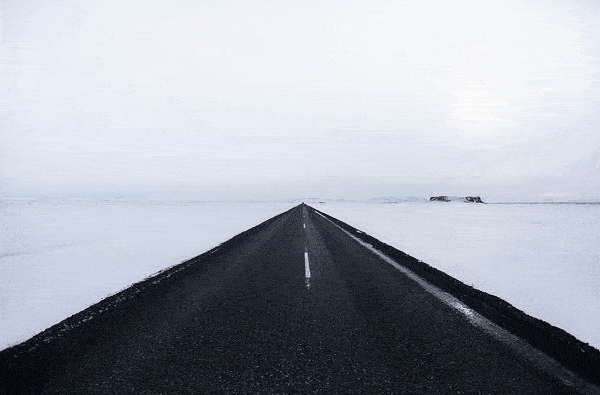
2. S-curve composition
Roads often bend, so they can be part of an S-curve. You can place the S of the road on the diagonal of the photo, or use it against other straight things (such as trees or traffic lights). The contrast makes the photo feel more dynamic.
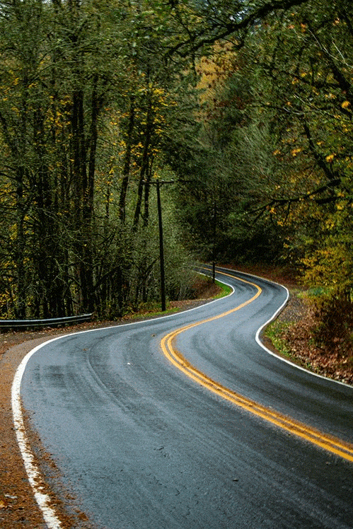
3. Leading-line composition
The road does not have to be the subject. It has another important job: to be a leading line.For example, when you shoot a lighthouse, look nearby fora road that can act as a leading line. Place the lighthouse and the road well in the frame. Use the road to lead the viewer's eye to the target, and the photo becomes more engaging.
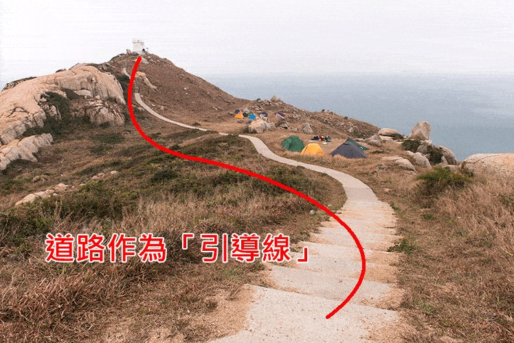
4. Frame-within-a-frame composition
If you find a C-shaped road, see whether the bend holds something interesting. If it does, the C-shaped road becomes a virtual frame that makes the interesting point stand out.
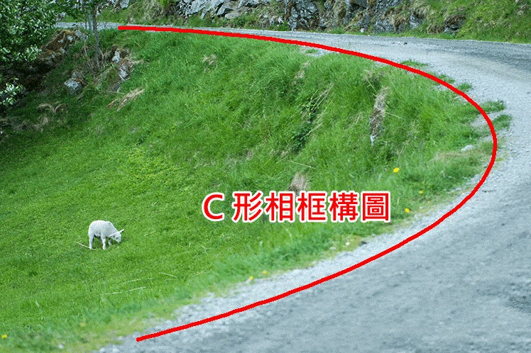
Subject ideas
1. The changing sky
The contrast between sky and road is the strongest. A golden sunset over a country lane feels warm and calm and makes you look ahead.Follow the China Photos WeChat account, wwwcnphotosnet, for more photography tips and news. Dark storm clouds over an endless road feel like rain is coming and leave you unsure.
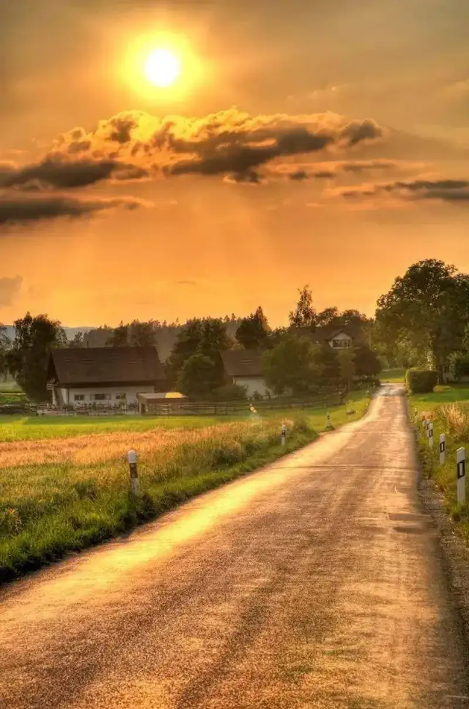
2. The scenery on both sides
If the objects on both sides are dense enough, they create a symmetry that is fun to watch. You do not need perfect symmetry. When the two sides differ slightly, the photo actually becomes more readable.
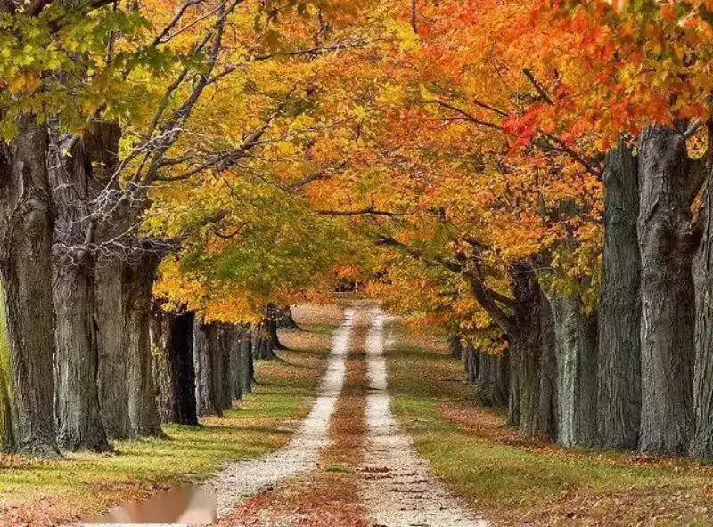
3. Create motion
Slow the shutter a little. After all, it is a road, so a sense of speed fits. Of course, if the scenery or the destination is unique, the composition gets more interesting.
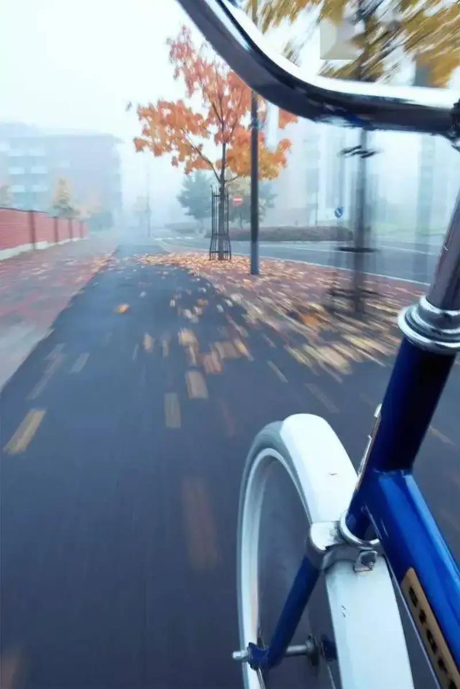
4. Empty places need a subject
In an endless desert or wasteland, a road often expresses a sense of pushing on and going far. If you catch one or two interesting road signs, the meaning of the photo grows.
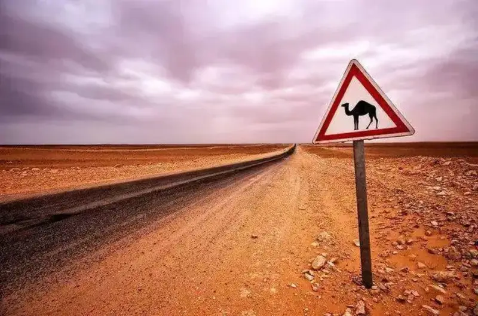
5. Silhouettes and reflections
Unlike bare ground, a road is flat and has a rough texture. So the reflection after rain and the silhouette against backlight are often interesting subjects.
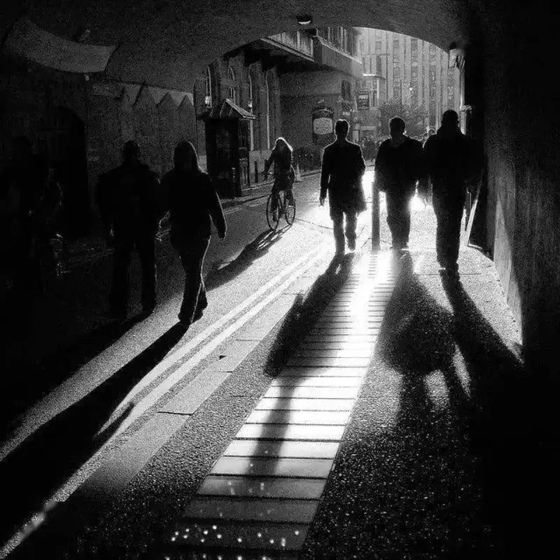
6. Street lights and car lights
This is the classic long-exposure shot, and many beginners start here. It is fine to try. But to stand out, you need to work on other things, such as a special terrain, different colors, or a different angle.
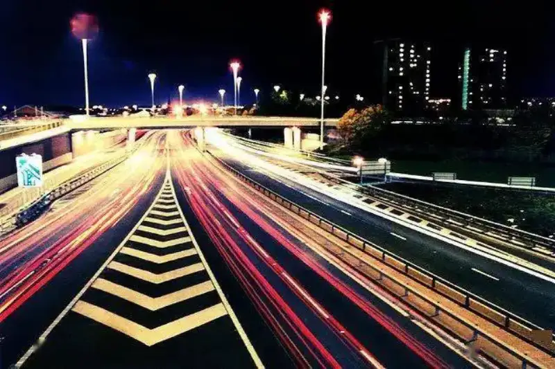
7. The shape of the road
A winding mountain path, a road that rises and falls, crossroads, and roundabouts give the pure pleasure of composition and make for a good photo.
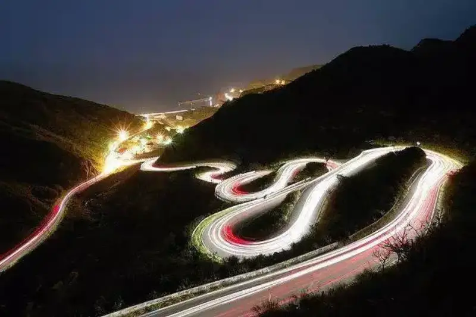
8. Traffic-jam photography
Using a tilt-shift lens, or making a tilt-shift effect in software, may be the best part of being stuck in traffic. Slow shutter and zoom burst also keep you entertained.
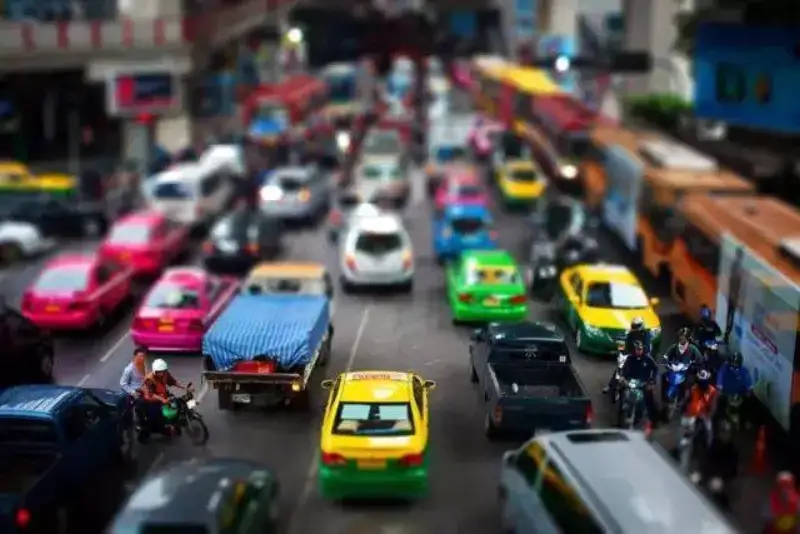
Finally, here is one of the most famous road photos in the world. Abbey Road is the cover of a famous Beatles album, and over the years it has inspired countless copies. You can try to look at them too.
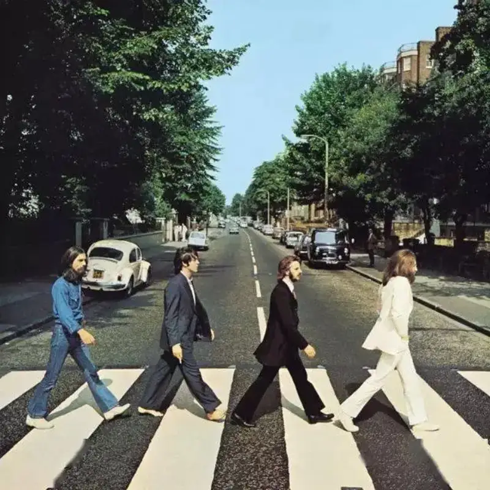
When you shoot, do not overlook an ordinary road. Besides being the subject itself, a road, used well, adds character to a photo and helps the composition. Next time you see a different road, think about how to use the ideas above.